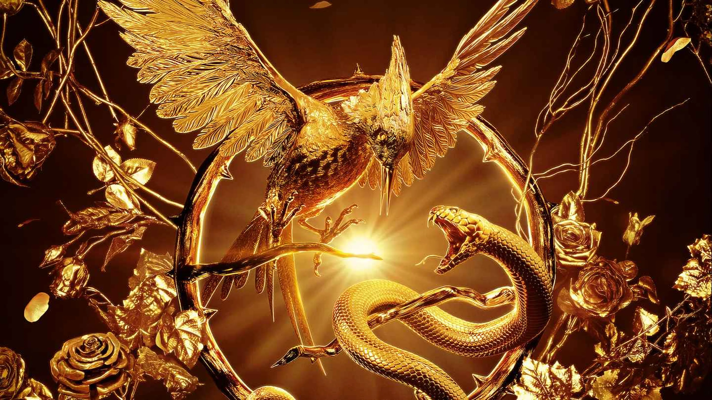

A lo largo de los anos, Suzanne Collins nos ha entregado varias obras en sus escritos, de donde nacio una famosa y muy conocida saga, titulada "Los Juegos del Hambre", gracias al poder de tener una gran narrativa, tiempo despues de haber publicado el primer libro, se realizo un live action del mismo, estrenada en el año 2012. Ademas, cabe destacar que gracias a el exito que tuvo en el mundo cinematografico, se realizaron las continuaciones de la primera pelicula. De ahi nacio esta saga tan amada por los lectores.
Lo que antes era Norteamerica ahora es Panem, un reluciente Capitolio rodeado por trece distritos, que llevo la paz y la prosperidad a sus ciudadanos. Entonces llegaron los Dias Oscuros, la rebelion de los distritos contra el Capitolio.Derrotaron a doce de ellos y aniquilaron al decimotercero.El Tratado de la Traicion trajo nuevas leyes para garantizar la paz y, como recordatorio anual de que los Dias Oscuros no deben volver a repetirse, se crearon los Juegos del Hambre, cuyas reglas son sencillas: en castigo por la rebelion, cada uno de los doce distritos debe entregar a un chico y una chica, a quienes se les llama tributos, para que participen. Los veinticuatro tributos se encierran en un enorme estadio al aire libre. Una vez dentro, los competidores tienen que luchar a muerte hasta que solo uno quede con vida. Ese tributo sera el ganador.